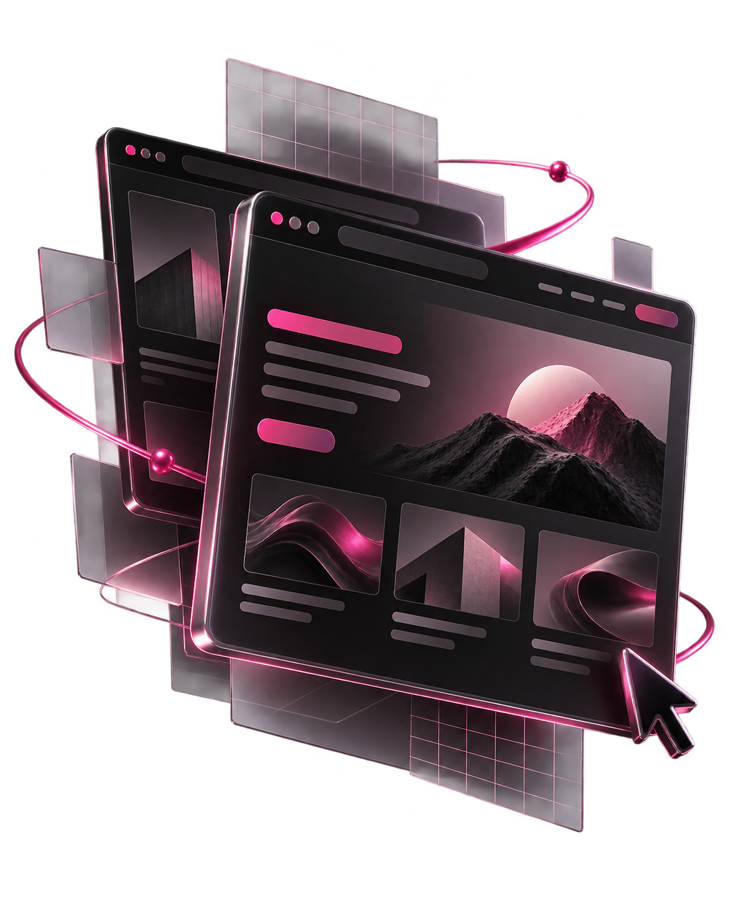
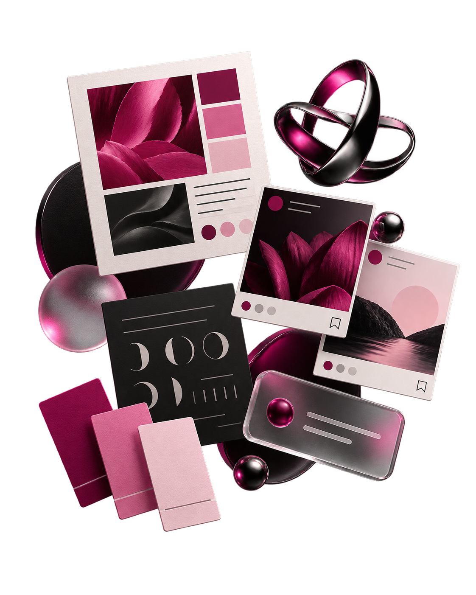

EXPERIÊNCIA DIGITAL
Sites com intenção
Interfaces velozes e feitas para posicionar marcas.
Desenvolvimento webCriamos sites, identidades visuais e conteúdos para mídias sociais que fazem sua marca se apresentar com consistência em cada lugar.

Interfaces velozes e feitas para posicionar marcas.
Desenvolvimento web
Linguagem visual autêntica e conexão em cada detalhe.
Ver nossos projetosCriamos páginas web modernas, responsivas e pensadas para transformar visitantes em pacientes e clientes reais.
Design acolhedor e alta performance focado em autoridade e agendamentos.
Presença digital sofisticada e humanizada para valorização do atendimento.
Experiência visual moderna para apresentação de tratamentos e corpo clínico.
Ouvimos sua história, seu momento e o que sua marca precisa comunicar.
Definimos uma direção criativa alinhada ao seu público e à sua essência.
Transformamos a estratégia em uma linguagem visual com personalidade.
Organizamos as aplicações para que sua marca se apresente com consistência.